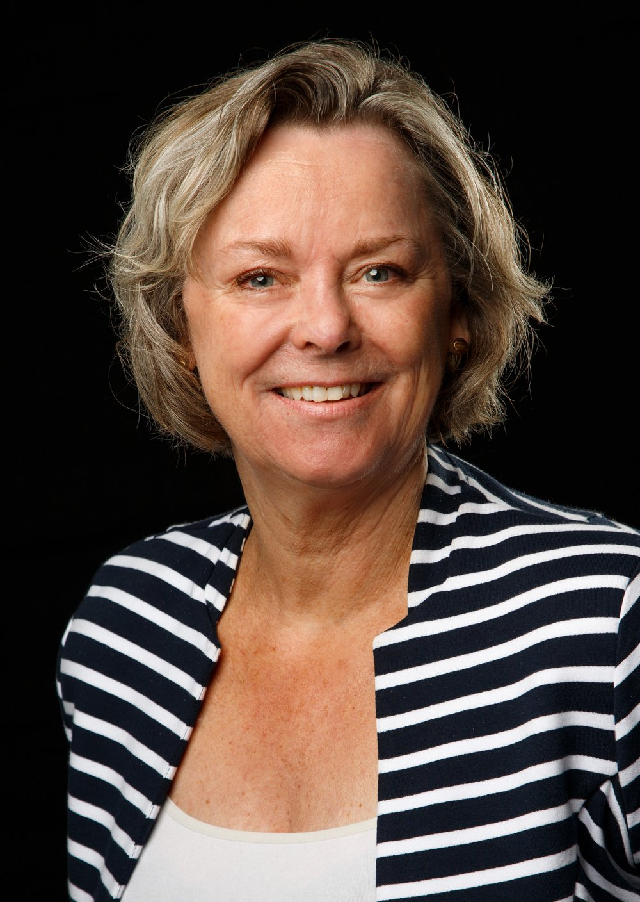
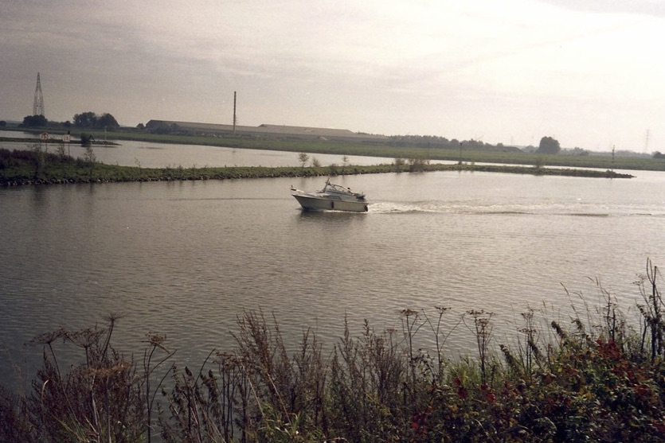
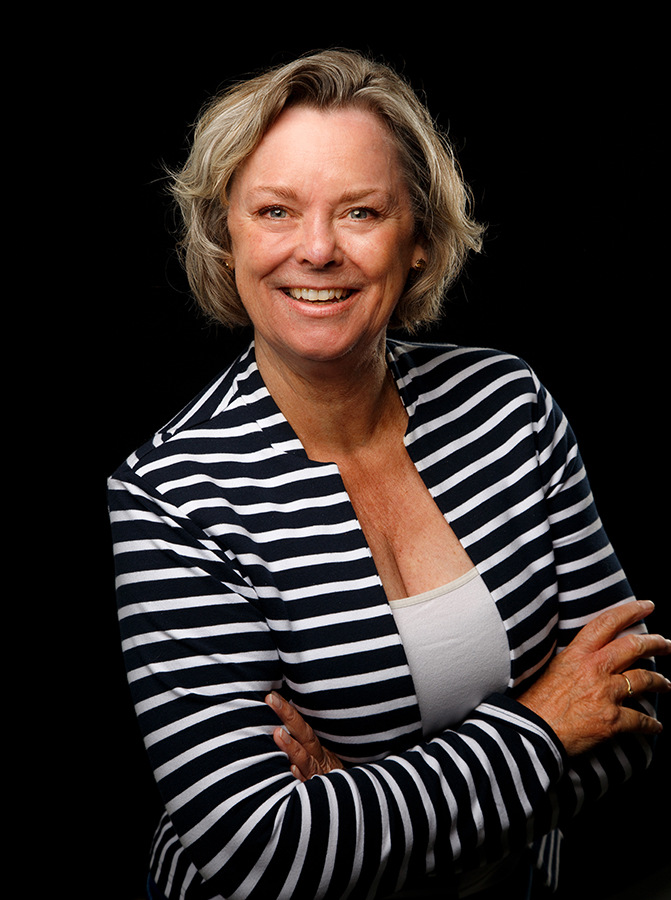

Is je stuurman weg of de kapitein overbelast? Ik kom de brug versterken.
Monique Wakelkamp leidt tijdelijk je team, projecten of een tender, zodat de zaken blijven doorlopen. Met daadkracht, nuchterheid en saamhorigheid.

Lean en mean werkt, tot er iemand uitvalt
De meeste organisaties zijn zo scherp ingericht dat niemand meer ruimte heeft om taken over te nemen. Zodra er iemand wegvalt, blijft er iets liggen. Vaak is het niet de taak die ontbreekt, maar de aansturing.
- Een teammanager gaat met zwangerschapsverlof of sabbatical
- Na een fusie zoekt iedereen nog naar een gezamenlijke manier van werken
- Een nieuw project moet starten terwijl het gewone werk doorloopt
- De HRM-afdeling heeft door externe oorzaken een tijdelijke piek
- Een aanbesteding legt grote druk op de bestaande organisatie
Je huurt me in voor de stress van vandaag, maar uiteindelijk gaat het om het resultaat en de rust van morgen.
Zulke projecten doe ik, voor één of meer dagen per week, kort of langere tijd. Het is maar net wat de situatie verlangt.
Drie manieren om de koers vast te houden
Interim managementTijdelijke vervanging en externe sturing
Moeten jullie je stuurman tijdelijk missen, of heeft de kapitein de handen al vol? Ik stuur het team aan, rol het project uit, splits het op in kleinere taken en zorg voor een goede start.
Lees meerCoachingHet team of de leider bijsturen
Ik ben de begeleider van de leider. Ik help de teamleider het heft weer in handen te nemen en help elk teamlid de sterke punten van zichzelf en de collega's te zien.
Lees meerMediationOnpartijdige hulp bij een verstoorde arbeidsverhouding
Een mediator haalt de kou uit de lucht en geeft partijen ruimte voor hun verhaal. Daarna is er ruimte voor toenadering: wat willen de partijen nu echt?
geenruzieophetwerk.nl
Onbezorgd varen op de Rijn, 1994
Net toen we de Wageningse binnenhaven uit wilden varen viel de motor van onze boot uit. Een reusachtig binnenschip voer recht op ons af. Het bleek iets kleins in de motor, dat bij het nalopen van onze checklist aan het licht had moeten komen.
Dit verhaal pak ik nog regelmatig erbij als ik tijdelijk een project aanstuur. Ik ben de loods die je door onrustig weer heen helpt. En ik kijk samen met jullie hoe jullie de volgende storm zelf doorstaan.
Mijn les: vertrouw niet op aannames.
Gepokt en gemazeld, in meer dan 25 jaar
Geen project is hetzelfde. Discretie is een van de afspraken, dus een greep uit wat ik deed en graag blijf doen.
Project duurzame inzetbaarheid leiden
Een pilot voor een hogeschool, voor facilitair, ICT en technisch personeel.
Tenders begeleiden
Als projectsecretaris voor een zorgverzekeraar, zodat het vaste team werd ontlast.
Herinrichting begeleiden
Bij een grote zorgverzekeraar de werkstromen ondersteunen en de logistiek bij P&O faciliteren.
Toetsen op marktconformiteit
Klantonderzoek, relaties verstevigen en het commerciële team op sterkte brengen.
Profileren van een thuiszorgorganisatie
Als senior accountmanager contracten sluiten en de dienstverlening uitbreiden.
Salesplan opstellen
Voor een bedrijf met na een fusie te veel projecten en te weinig tijd.

Interim manager, coach en mediator
- Ervaring25 jaar als leidinggevende in verschillende organisaties
- Eigen baasSinds 2007
- RegistratieMfN-registermediator voor arbeidszaken
- WerkgebiedWoonachtig in Bennekom, werkzaam door heel Nederland
- Warm hart voorHet bedrijfsleven en de zorgsector
Altijd op zoek naar de overeenkomsten.
Speelt er veel tegelijk? Bel of mail.
Zo is snel helder wat ik voor jullie kan doen. Ben ik niet direct bereikbaar, dan bel ik binnen 24 uur terug.
Bel 06 53 65 96 68- Telefoon
- +31 653 659 668
- wakelkamp@bureau1900.nl
- Adres
- Dikkenbergweg 7
6721 AC Bennekom